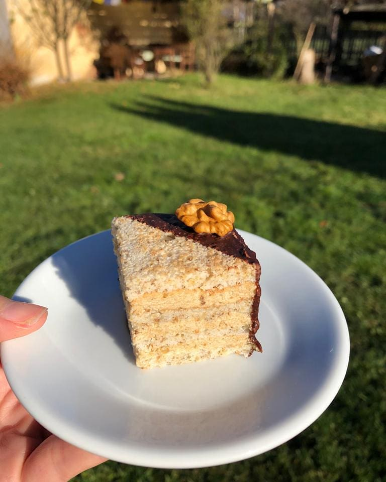

Kávové rezy podľa @michalkakoalka — Normy Jedál
Kávové řezy podle @bududub
Pokud hledáte inspiraci na vánoční dárky, doporučuji její kuchařku Cesta z těsta!
Je plná krásných receptů z dostupných surovin, tohle je první recept, který podle ní peču a určitě nebude poslední :)
#kavoverezy #stafetky #tradicnikuchyne #ceskerecepty #bududub #cestaztesta #nature #baking #foodporn #koalavkuchyni